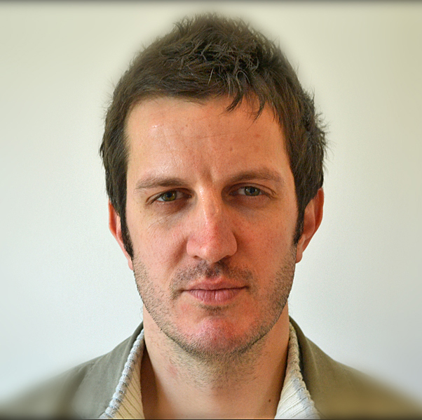

Evaluation
An independent evaluation will assess and corroborate the quality of the project and the participatory processes providing suggestions for improvements in the future.
Two subcontracted evaluators will utilize a coherent framework that will clearly define participation and project quality.
The VOICES evaluators are:
Richard Watermeyer
Richard Watermeyer, holds a Ph.D in sociology from Cardiff University's internationally esteemed, School of Social Sciences, and has research interests located at the interface of science and technology studies and the sociology of education. In both areas he is widely published but has special expertise in investigating innovative approaches to 'upstream' engagement and dialogue and interactive and experiential pedagogy. He has written about the expert/public interface in a number of formal and informal educational contexts including science museums/centres; science communication companies and the like.
Through the academic consultancy PIER logistics Ltd, Dr Watermeyer has led a number of UK Government and Government agency evaluations, most frequently in conjunction with Sciencewise.
Gene Rowe
Gene Rowe is a cognitive/social psychologist whose PhD (from Bristol Business School) concerned group forecasting processes. His subsequent work has focused on human judgment and decision making, especially in the 'food' context, and in particular on food risk perception/ management/ communication, as well as on public engagement processes (in science and technology decision making) and the evaluation of these. He has been successful at attaining and managing a variety of national and international projects.
Dr. Rowe founded the GRE (Gene Rowe Evaluations) in 2010. The company focuses on conducting primary academic research, desk analysis, and evaluations of public and stakeholder engagement processes.